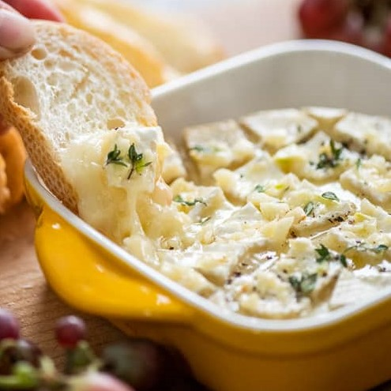
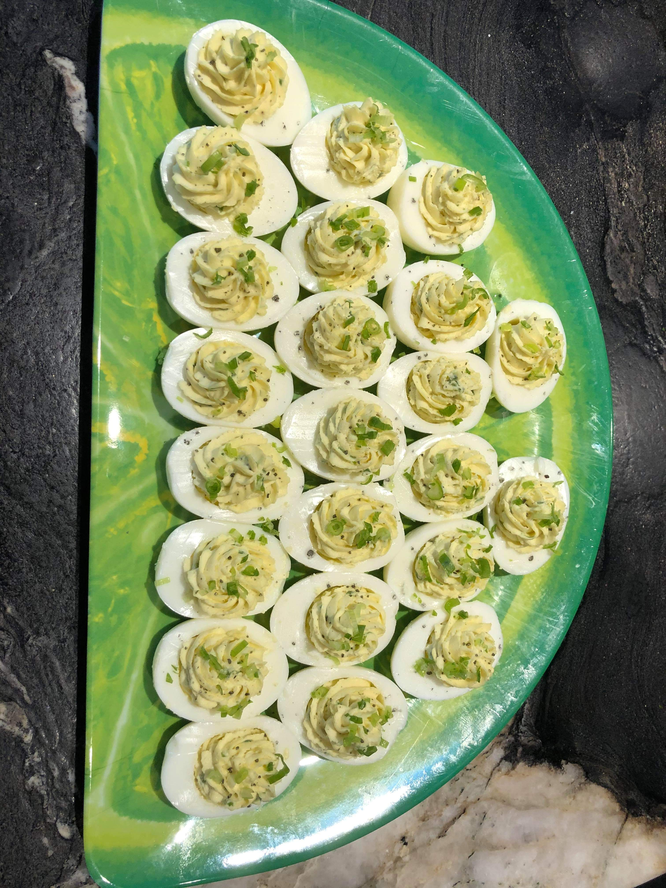

Garlic Butter Baked Brie

Cheese lovers rejoice, there is nothing simpler than a baked brie. This recipe
is quick to make and great to serve with bread, crackers, or chips. Serve warm for the ultimate gooey cheesy experience!
Servings: 6 Servings
- 1 round of brie (8-12oz 22-340g)
- 2 garlic cloves, minced
- 2 tablespoons butter, melted
- 1/2 teaspoon thyme leaves
- black pepper (to taste)
- Pre-heat oven to 375F (190C).
- Score top of the brie with 1/2" cuts in crosshatch. Place brie in small oven safe ceramic dish.
- Combine minced garlic with melted butter, pour mixture over brie.
- Sprinkle thyme leaves and fresh cracked black pepper.
- Bake for about 10-15 minutes, or until brie is melted.
Truffled Deviled Eggs

Deviled eggs is a classic appetizer that pairs nicely with a splash of truffle oil.
The recipe is perfectly scalable for any dinner party, simply choose how many eggs you wish to make and scale
all ingredients accordingly.
Servings: 6 Servings (12 egg halves)
- 6 Large hard-boiled eggs, halved
- 1/4 cup mayonnaise
- 1 teaspoon rice wine vinegar
- 1/2 teaspoon fresh dill, chopped
- 1 teaspoon dijon mustard
- 1/4 teaspoon garlic powder
- 1/2 teaspoon truffle oil
- salt and pepper (to taste)
- Scoop egg yolks into medium mixing bowl setting whites aside.
- Add mayonnaise, vinegar, dill, mustard, garlic powder and 1/4 teaspoon truffle oil to the bowl, mashing until fully mixed.
- Salt and pepper mixture to taste.
- Spoon mixture into egg white halves. placing filled halves onto serving plate.
- Lightly drizzle 1/4 teaspoon truffle oil over deviled eggs
- Cover serving plate with cling wrap and refrigerate until ready to serve.